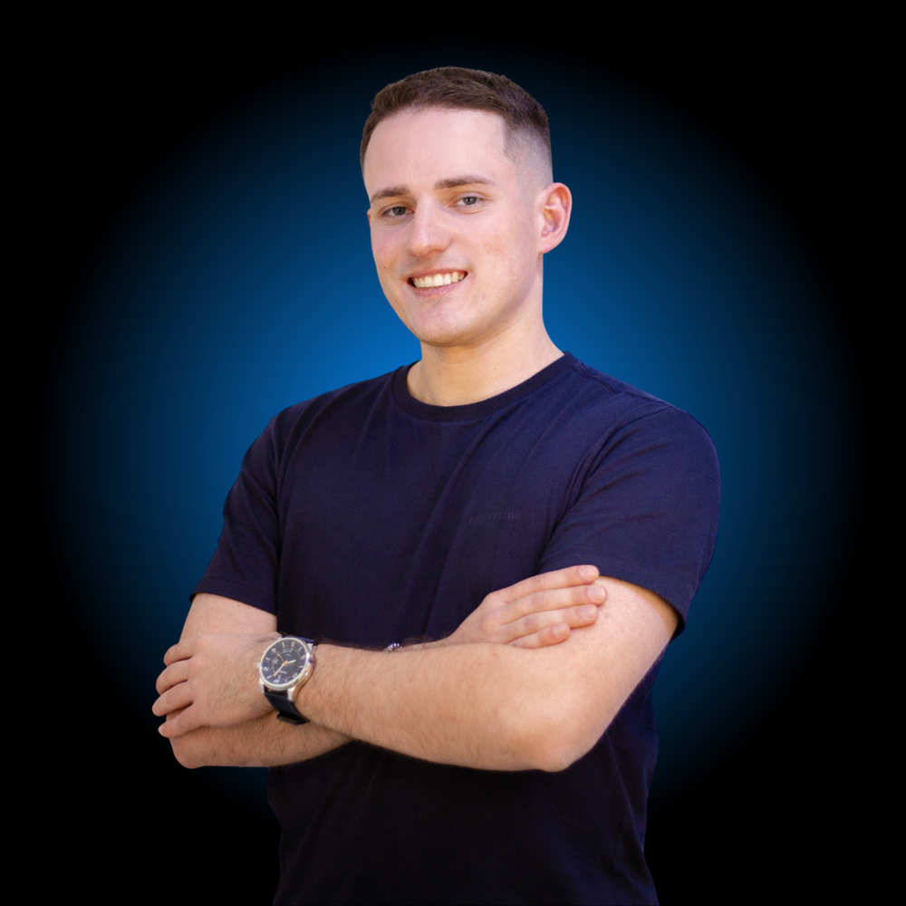

Como aluno do Colégio Coração de Maria, em Esteio/RS, tive meu primeiro contato com a Robótica Educacional. Uma curiosidade que, com o tempo, se transformaria em propósito.
Vivi a robótica de forma intensa como competidor e mentor, participando de torneios e feiras de ciências pelo Brasil. Acumulei premiações e aprendi sobre dedicação, trabalho em equipe e criatividade — construindo conexões que moldaram o profissional que sou hoje.
A formação técnica fortaleceu minha base e ampliou minha forma de enxergar a tecnologia na prática — mas foi na educação que encontrei o verdadeiro sentido no que faço.
Passei a atuar com alunos, professores e instituições que buscam um ensino mais significativo e conectado com o futuro. Também assumi o papel de juiz voluntário em torneios de robótica, mantendo participação ativa no ambiente que moldou minha formação.
Fundei a Mentes Makers para transformar a forma como a Robótica é ensinada. Desenvolvi o Método dos 3Es — uma abordagem que organiza o ensino em etapas claras e progressivas, conectando teoria e prática e desenvolvendo pensamento lógico, criatividade, autonomia e resolução de problemas.
Em constante evolução — aprimorando práticas, estudando novas metodologias e me conectando com profissionais da área. Minha missão é tornar o aprendizado mais próximo, mais inspirador e mais significativo, ajudando cada aluno a perceber seu potencial.

É uma ferramenta para desenvolver pensamento, autonomia e a capacidade de resolver problemas reais. Acredito que cada aluno é capaz de construir o próprio caminho — e estou aqui para ajudá-lo a perceber isso.